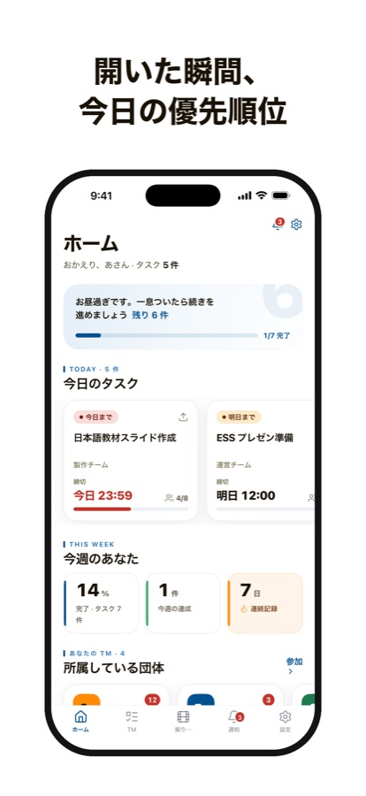

Project Agent
A team app for student groups.
Circles, seminars and volunteer teams run several projects at once, and the work gets lost in group chats. Project Agent keeps it as group, project, team and task, and keeps a record once a project ends.
- Claude
- Built by Claude Code agents with separate jobs: planning, building, QA and design review. Next: Claude writes the project recap when a project closes.
- Stack
- Expo, React Native, Supabase
- Status
- TestFlight, App Store submission in progress